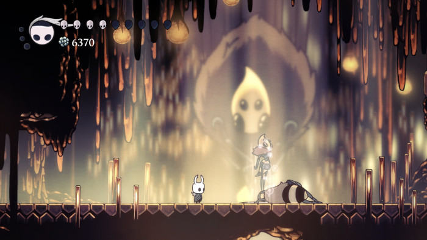

A Colmeia
A Colmeia é composta por túneis e câmaras hexagonais, habitadas por uma sociedade organizada de insetos. As paredes e tetos são cobertos por uma textura de cera que reforça o tema de colônia.

Sociedade Organizada
Cada área abriga diferentes espécies de insetos, e o terreno é relativamente uniforme. A região é funcional e oferece desafios únicos, refletindo a natureza coletiva da colônia.

Feito por Antonio Marcos
Gmail: antoniomarcoscraft@gmail.com